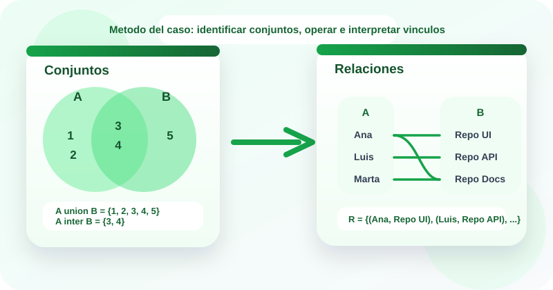

Casos guiados
Estudio de casos
Operaciones con conjuntos y relaciones
🤔 ¿Sabías que cuando un sistema agrupa usuarios, filtra coincidencias entre módulos o conecta estudiantes con cursos, está usando ideas de conjuntos y relaciones?
En desarrollo de software es común trabajar con escenarios como usuarios que pertenecen a varios grupos, tickets compartidos entre dos equipos o asignaciones entre personas y recursos. Todo esto puede modelarse con operaciones con conjuntos y relaciones 📊. En este OVA aprenderás a representar conjuntos, resolver unión, intersección y diferencia, y leer relaciones mediante pares ordenados 🚀.
Este tema ayuda a organizar información, identificar coincidencias y diferencias y describir conexiones entre elementos 💻. El enfoque del recurso sigue la metodología de estudio de casos, para pasar de situaciones reales a representaciones formales y luego interpretar los resultados.

Objetivos de aprendizaje
- 🧠 Comprender qué es un conjunto, cómo se representa y cómo se describen sus elementos, subconjuntos y universo de referencia.
- 🔍 Aplicar operaciones como unión, intersección, diferencia, complemento y producto cartesiano en contextos académicos y tecnológicos.
- 📝 Modelar relaciones mediante pares ordenados, tablas y matrices, reconociendo cuándo un elemento se vincula con otro.
- 💻 Resolver casos del contexto de software usando conjuntos para filtrar información y relaciones para representar asignaciones o vínculos entre entidades.
- ✨ Interpretar el significado práctico de una operación o relación y justificar decisiones a partir de su resultado.
Contenido temático
De la agrupación de datos a las conexiones entre elementos
El eje del recurso es leer casos, representar conjuntos y relaciones, y explicar el significado del resultado.
Unión
Reúne todos los elementos que están en A, en B o en ambos.
A ∪ B
Sirve para consolidar listas, grupos de usuarios o módulos atendidos por distintos equipos.
Intersección
Se queda solo con los elementos comunes entre dos conjuntos.
A ∩ B
Permite detectar coincidencias, superposiciones o elementos compartidos.
Diferencia
Muestra lo que está en un conjunto pero no en el otro.
A - B
Es útil para identificar pendientes, elementos faltantes o filtros excluyentes.
Producto cartesiano
Construye todas las parejas posibles entre elementos de A y B.
A × B
Es la base formal para describir relaciones entre dos conjuntos.
Relación
Conecta elementos de un conjunto con elementos de otro.
R ⊆ A × B
Se representa con pares ordenados y ayuda a modelar asignaciones, dependencias o coincidencias.
Actividades de práctica
Practica con clasificación de conceptos, correspondencia de casos, secuencia de resolución, ejercicios de operaciones y un laboratorio para experimentar con conjuntos y relaciones.
Actividad 1. Clasifica cada tarjeta
Ubica cada tarjeta en la categoría correcta: conjunto, operación o relación.
En móvil puedes tocar una tarjeta y luego tocar la zona de destino.
A = {frontend, backend, qa}
A ∪ B
(Ana, Repo-01)
B = {api, auth, pagos}
A ∩ B
R = {(u1, c1), (u2, c2)}
U = {1, 2, 3, 4, 5}
A - B
Conjunto
Operación
Relación
Actividad 2. Relaciona cada caso con su concepto
Arrastra cada situación hacia la operación o relación que mejor la representa.
Si estás en celular, toca una tarjeta y luego la categoría correspondiente.
Obtener todos los estudiantes inscritos en Programación o en Bases de Datos.
Detectar los tickets que fueron reportados por frontend y backend.
Listar módulos desarrollados que aún no pasan por QA.
Asociar cada estudiante con el proyecto al que fue asignado.
Consolidar dos listados de usuarios sin repetir elementos.
Encontrar usuarios que tienen correo verificado y doble factor activo.
Separar los elementos de A que no aparecen en B.
Representar con pares ordenados qué mentor acompaña a qué grupo.
Unión
Intersección
Diferencia
Relación
Actividad 3. Ordena la metodología del caso
Asigna del 1 al 5 el orden correcto para resolver un caso con conjuntos y relaciones.
Actividad 4. Completa los resultados
Usa A = {1, 2, 3, 4} y B = {3, 4, 5}. Selecciona la respuesta correcta en cada ejercicio.
| Ejercicio | Respuesta |
|---|---|
| A ∪ B | |
| A ∩ B | |
| A - B | |
| |A × B| |
Actividad 5. Laboratorio de conjuntos y relaciones
Experimenta con tus propios conjuntos. En el primer bloque calcula operaciones; en el segundo genera una relación numérica entre dos conjuntos.
Laboratorio 1. Operaciones con conjuntos
Listo para analizar
Laboratorio 2. Relaciones numéricas
Listo para analizar
Evaluación de comprensión
Responde el cuestionario para verificar tu dominio sobre conjuntos, operaciones y relaciones.
Recursos de apoyo
Antes de operar
Verifica que los elementos no estén repetidos y define con claridad qué representa cada conjunto.
Durante el análisis
Pregúntate si el caso pide reunir, comparar, excluir o conectar elementos.
Después del cálculo
Traduce el resultado a lenguaje natural para explicar su utilidad dentro del caso.
Hoja rápida de estudio
- La unión consolida elementos sin repetir.
- La intersección detecta coincidencias entre conjuntos.
- La diferencia muestra lo que queda fuera de una coincidencia.
- El producto cartesiano crea todas las parejas posibles.
- Una relación selecciona algunas de esas parejas según una regla.
Bibliografía
Rosen, K. H. Matemáticas discretas y sus aplicaciones.
Grimaldi, R. P. Matemáticas discretas y combinatoria.
Epp, S. S. Matemática discreta con aplicaciones.
Materiales de aula de la asignatura Fundamentos Matemáticos del programa Tecnología en Desarrollo de Software.
Creado para:
Tecnología en Desarrollo de Software · Fundamentos Matemáticos